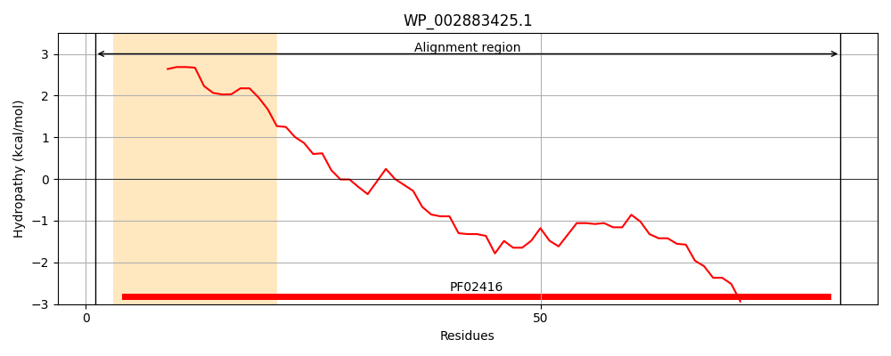
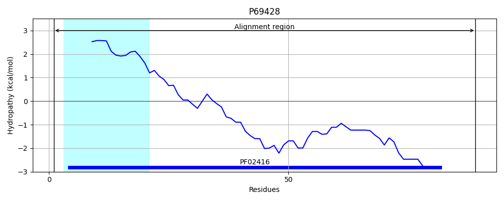
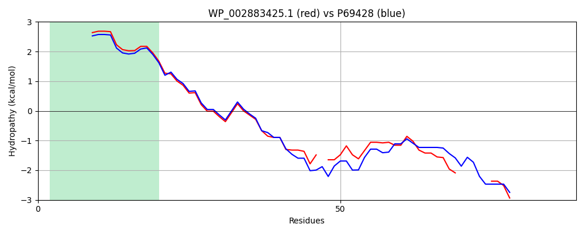

Hit Accession: P69428
Hit TCID: 2.A.64.1.1
Hit Description: gnl|BL_ORD_ID|11264 gnl|TC-DB|P69428|2.A.64.1.1 Sec-independent protein translocase protein tatA - Escherichia coli.
Mach Len: 89
e:0.000000
Query TMS Count : 1
Hit TMS Count: 1
TMS-Overlap Score: 0.950000
Predicted Substrates:None
BLAST Alignment:
| Protein Hydropathy Plots: | |
|---|---|
|  |  |
Pairwise Alignment-Hydropathy Plot: | |
|  | |